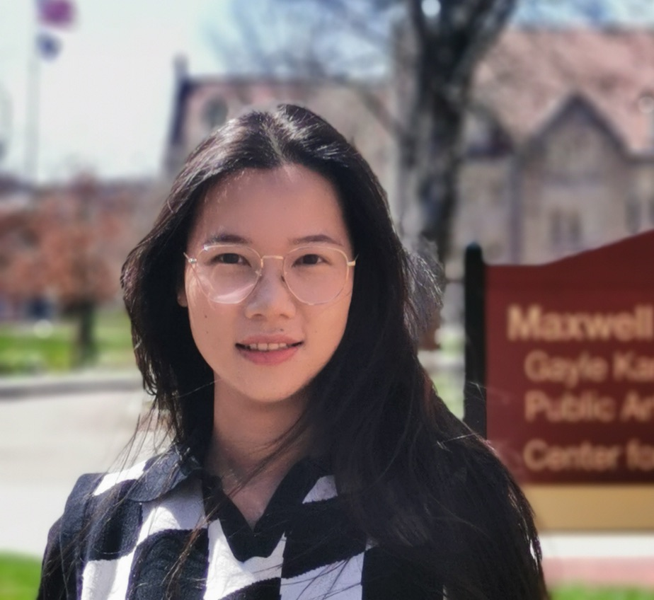

Welcome! I am an Assistant Professor of Finance at School of Finance, Nankai University. I received my phd in Economics from Indiana University of Bloomington in 2025.
Research Interests: Environmental Economics, Industrial Organization, and Household Finance